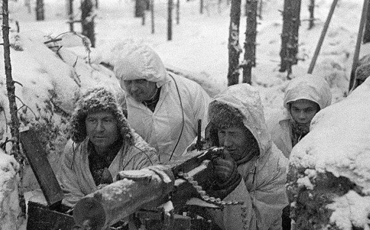
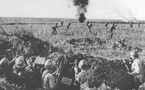
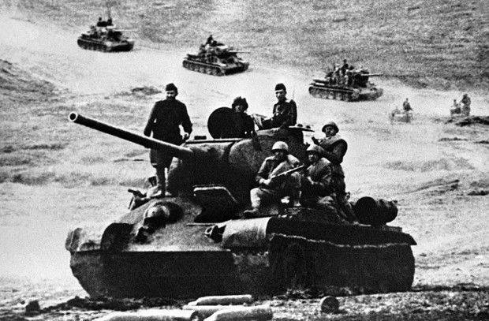
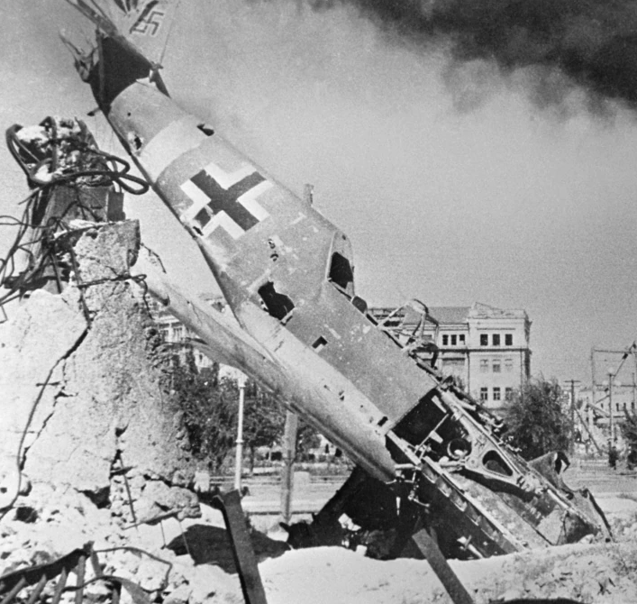
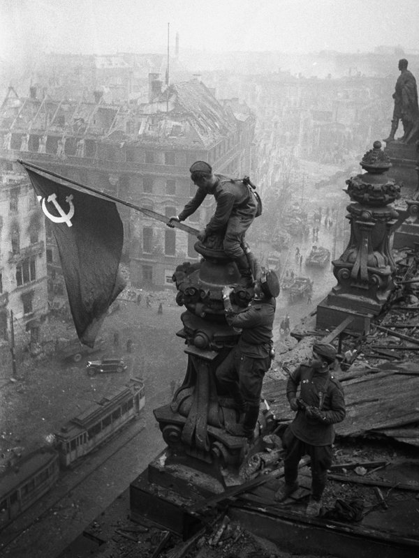
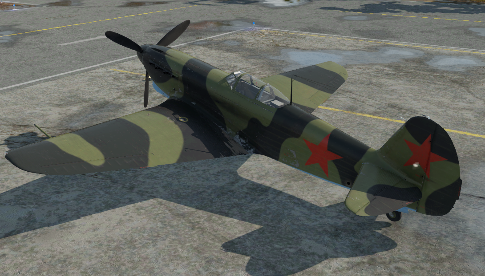
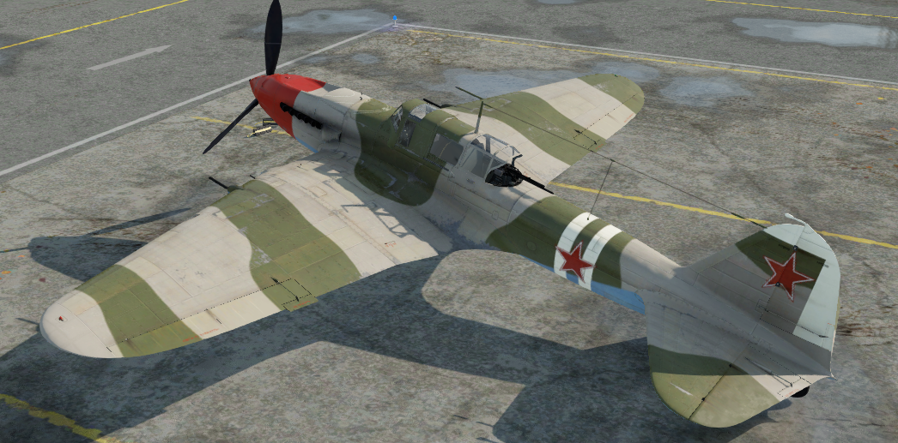
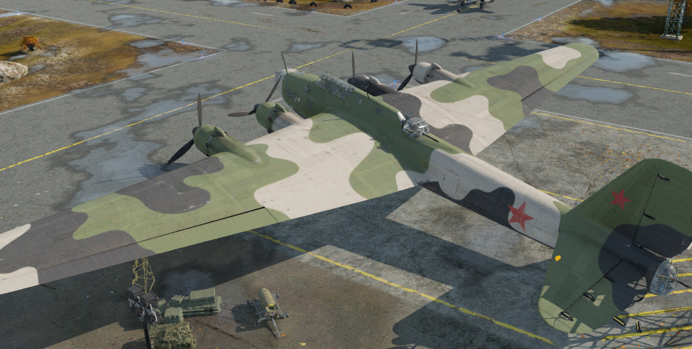
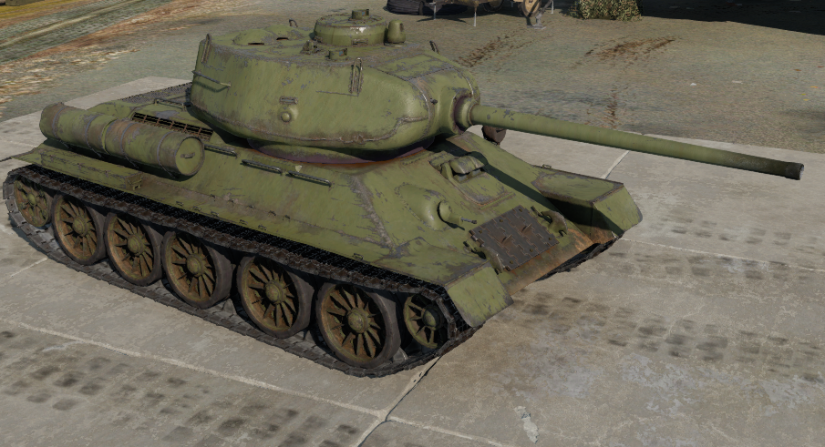
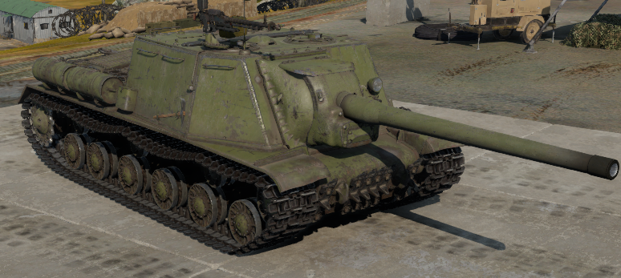

Komiterna
Kominterna (Komunistická internacionála), zvaná též Třetí internacionála, byla mezinárodní komunistická organizace, založená v Moskvě v březnu roku 1919. Zakládajícími členy byli zástupci 19 komunistických stran, přičemž prakticky od počátku měla hlavní slovo komunistická strana Ruska . V čele stál tzv. Výkonný výbor komunistické internacionály. Cílem kominterny bylo šířit myšlenky komunismu a „všemi prostředky, včetně použití ozbrojené síly, bojovat za svržení světové buržoazie a vytvoření mezinárodní Sovětské republiky, jako přechodové fáze k úplnému rozpouštění států“.Roku 1928 měla přes 580 tisíc členů mimo Sovětský svaz. Mezi lety 1919 až 1935 zorganizovala celkem 7 kongresů, jež se vždy scházely v Moskvě, Výkonný výbor se sešel celkem třináctkrát. Kominterna byla rozpuštěna roku 1943 s cílem čelit hitlerovské propagandě, která tvrdila, že se Moskva hodlá vměšovat do vnitřních věcí jiných zemí a bolševizovat je a rovněž jako vstřícné gesto vůči západním Spojencům. Po válce ji v roli nástroje k řízení světového komunistického hnutí nahradila Kominforma.
Válka s Finskem
Politická situace před válkou
Mezi Finskem a Sovětským svazem byl 21. ledna 1932 uzavřen pakt o neútočení, v roce 1934 znovu potvrzený na dobu deseti let a v roce 1934 se Sovětský svaz zapojil do Společnosti národů. Přesto zůstaly vztahy mezi oběma zeměmi na bodu mrazu. SSSR přijal na svém území velkou část finských komunistů, kteří uprchli z Finska po jejich porážce, když se pokusili v roce 1920 zavraždit generála Mannerheima. Během stalinismu, který následoval, označovala sovětská propaganda finské přední představitele za fašistickou kliku. Stalin, který získal neomezenou moc po velké čistce v 30. letech 20. století, začal požadovat navrácení provincií, které ztratilo Ruské impérium během chaotických událostí Říjnové revoluce v roce 1917 a následné ruské občanské války a nastolení jedné z nejtvrdších diktatur světa. Sovětská vláda se domnívala, že Ruské impérium mělo ideální bezpečnostní a teritoriální strukturu, a chtěla, aby nově „pokřtěné“ město Leningrad získalo obdobné postavení.
Přípravy k zimní válce
 Sověti začali s intenzivní mobilizací v blízkosti finských hranic již koncem roku 1938, ale k rozmístění invazních jednotek došlo teprve v říjnu 1939. Záminkou k samotné invazi se stal Mainilský incident, který Sovětský svaz zinscenoval 26. listopadu 1939. Po třech dnech přerušily obě strany 29. listopadu diplomatické styky a o den později, 30. listopadu v 06:50, zahájily sovětské jednotky bez vyhlášení války masové ostřelování finského pohraničí a nálety na finská města. V 08:00 pak Rudá armáda ukončila dělostřeleckou přípravu a vtrhla na finské území. 1. prosince zřídil Sovětský svaz loutkovou vládu Finské demokratické republiky, která měla převzít vládu jakmile Rudá armáda Finsko porazí. V jejím čele měl stát finský komunista Otto Ville Kuusinen. Spolu s touto transformací formálně zanikla i tato vláda. V roce 1991, kdy se rozpadl Sovětský svaz, byla tato část přičleněna k Republice Karélie.
Výsledky zimní války
Zimní válka skončila Moskevským mírem 13. března 1940, v jehož podmínkách Finsko muselo odstoupit velkou část svého území a přistoupit na většinu ruských podmínek. Ztratilo téměř celou Karélii, území v oblasti Salle a svou část Rybářského poloostrova. Muselo souhlasit se zřízením sovětské vojenské základny v Hanko, vybudováním železnic spojujících Sovětský svaz a Norsko a přislíbit sovětským jednotkám právo transportu po těchto železnicích.
Velká Vlastenecká válka
Velká vlastenecká válka, je ruský název pro sovětsko-německou válku probíhající v letech 1941–1945. Sovětské, resp. po zániku Sovětského svazu ruské, a některé východoevropské prameny tak označují boje na východní frontě (východní z německého hlediska, pro Sovětský svaz šlo o frontu západní) mezi Sovětským svazem a Německem a jejich spojenci během druhé světové války.
Pojem „Velká vlastenecká válka“ nebo „vlastenecká válka“ používal sovětský tisk od samého počátku války, noviny Pravda už 23. a 24. června 1941 tehdy ještě ne jako pojmenování války, ale jen jako jedno z několika klišé, společně s řadou podobných označení , přičemž současně Pravda připomínala i vlasteneckou válku roku 1812. Mezi řadou dalších označení se vlastenecká válka objevila i v projevu tehdejšího sovětského předsedy vlády Josifa Stalina z 3. července 1941. Spojení „Vlastenecká válka“ získalo oficiální charakter, když bylo použito při pojmenování Řádu Vlastenecké války zřízeného výnosem předsednictva Nejvyššího sovětu Sovětského svazu z 20. května 1942.
Termín zdůrazňuje národní a obranný charakter konfliktu a odkazuje též na „Vlasteneckou válku“, tradiční ruské označení pro francouzský útok na Rusko roku 1812. Velká vlastenecká válka začala 22. června 1941 přepadením Sovětského svazu Německem a skončila německou kapitulací 9. května 1945 (zahrnuje i závěrečné boje probíhající v rámci Pražské operace po 9. květnu 1945 ).
Převrat u Stalingradu
Průběh poloviny bitvy byl na německé straně poznamenán osobními zásahy Adolfa Hitlera. Ten byl fascinován představou dobytí města nesoucího jméno jeho protivníka a na dálku velice nešťastně zasahoval do řízení vojenských operací. Rudá armáda vybičovaná rozhořčením nad barbarským chováním německých jednotek v Sovětském svazu a prací agentů a uzávěrových jednotek NKVD, kteří dostali rozkaz zastřelit každého, kdo by město opustil a prchl za Volhu, město zuřivě bránila. Rudá armáda se dokázala udržet na malém kousku země poblíž pravého břehu řeky Volhy (speciálně 62. armáda pod velením generála V. I. Čujkova), podporována obrovským množstvím děl rozmístěných na levém břehu. Zatímco válečníci Osy postupně, dům od domu, obsazovali a čistili Stalingrad, Rudá armáda přemístila ke Stalingradu všechny jednotky postradatelné jinde na frontě a také další síly ze Sibiře a 19. listopadu 1942 zahájila operaci Uran – smetla rumunské, maďarské a italské jednotky nacházející se na křídlech 6. armády a obklíčila ji ve městě spolu s částmi 4. tankové armády.
V této době se snad ještě 6. armáda mohla probít zpět, ale Hitler to zakázal. Hitler nařídil generálu Erichu von Mansteinovi aby se k Stalingradu probil a obnovil spojení s 6. armádou. Manstein se tento, v dané situaci prakticky nemožný úkol, pokusil splnit a dostal se se svými jednotkami 50 km od Stalingradu, ale čerstvé ruské síly jej posléze definitivně vrhly zpět. Hitler, podpořen tvrzením vrchního velitele Luftwaffe maršála Hermanna Göringa, že dokáže Paulusovu armádu zásobovat ze vzduchu, zakázal Paulusovi vyrazit z města naproti Mansteinovi. Göring však svůj slib splnit nedokázal a při pokusech o jeho splnění nechal zcela zdecimovat zásobovací a přepravní část Luftwaffe. Když Hitlerovi došlo, že Paulus a jeho vojska jsou ztraceni, nařídil jim, že musí vydržet co nejdéle a jmenoval Pauluse polním maršálem, protože žádný německý polní maršál se nikdy před tím v historii nepříteli nevzdal. Paulus však odmítl zemřít a byl sovětskými vojáky zajat. Organizovaný odpor 6. armády byl ukončen 2. února 1943. Uvnitř kotle bylo zajato asi 90 000 vojáků; často již ve velmi zuboženém stavu, pouze 6000 se jich po konci války dočkalo propuštění na svobodu a mohlo se vrátit domů.
Bitva v Berlíně
První boje v předměstích začaly již 21. dubna. Vojska 1. běloruského a 1. ukrajinského frontu začala přímý útok na město Berlín 25. dubna. Do 29. dubna dobyla podstatnou část Berlína a pronikla do středu města. Brzy ráno 29. dubna Hitler ve svém bunkru dopsal svou závěť a uzavřel manželství se svou dlouholetou milenkou Evou Braunovou. Téhož dne se rozhořely těžké boje o budovu velitelství Gestapa na Prinz-Albrechtstrasse, kterou nejprve obsadily sovětské jednotky, ale protiútok SS je později přinutil ustoupit. Jižněji se jednotkám 8. gardové armády podařilo překročit kanál Landwehr a proniknout do parku Tiergarten. Berlínská posádka byla během celodenních bojů rozdělena na tři izolované oblasti.
 Ve stejný den bylo Rudou armádou obsazeno ministerstvo vnitra a Sověti byli od Říšského sněmu vzdáleni pouze 500 metrů. Obsazení ministerstva vnitra byla po získání Moltkeho mostu druhou fází útoku na Říšský sněm. Jeho obsazením byl pověřen 79. střelecký sbor generála Perevertkina. Říšský sněm bránilo asi 5 000 vojáků Waffen SS, armády a Volkssturmu. Těžké boje se rozpoutaly zejména před budovou, kde stálo několik 88 mm protiletadlových kanónů, které bránily přístup z Moltkeho mostu před tanky. 30. dubna vrhli Sověti do útoku proti říšskému Kancléřství 150. divizi. První dva útoky na Reichstag v průběhu dne uvázly, o třetí úspěšný se pokusili až po silném dělostřeleckém ostřelování budovy po 18. hodině. Jedním z důvodů neúspěchů předešlých útoků byla silná palba z 2 km vzdálené flakové věže s 88mm kanóny poblíž Berlínské zoo. Po tom co se sovětské pěchotě podařilo dostat dovnitř Říšského sněmu ho Němci zapálili, doufajíc, že z ní nepřítel ustoupí. V průběhu bojů se 4 vojáci Michail Minin, Gazi Zagitov, Alexandr Lisimenko a Alexej Bobrov kolem 22:40 dostali jako první sovětští vojáci s vlajkou na střechu budovy, kde ji vyvěsili na místě jedné z bronzových soch. Vzhledem k tomu, že vlajku vynesli ve tmě bez přítomnosti fotografů, tak jejich čin upadl do zapomnění. Oficiální vlajku na střechu Říšského sněmu umístili kolem 3:00 ráno následujícího dne seržanti Michail Jegorov a Meliton Kantaria, kteří akt zopakovali za dobrého světla před fotografem. Poslední izolované skupinky Němců v budově se vzdaly až 2. května.
Když Keitel Hitlerovi sdělil, že Wenckova 12. armáda svádí těžké boje a do Berlína nedorazí, bylo rozhodnuto. Weidling ho také informoval, že obráncům dochází munice a během několika hodin jejich obranu Sověti přemohou. Adolf Hitler následně povolil přeživším obráncům pokoušet se probít na západ. V té době se již v blízkosti bunkru bojovalo. Adolf Hitler a jeho novomanželka Eva, rozená Braunová, po poledni spáchali sebevraždu. Jejich těla byla následně spálena a zakopána blízko bunkru. Za Hitlerova následníka byl jmenován podle závěti admirál Karl Dönitz, který začal formovat novou vládu ve Flensburgu poblíž Dánských hranic. Ještě týž den ve 22 hodin vztyčili dva rudoarmějci sovětskou vlajku na kupoli Reichstagu. 1. května 1945 se Joseph Goebbels pokusil dosáhnout zastavení palby, avšak Stalin trval na bezpodmínečné kapitulaci. Vzápětí na to Goebbels a jeho žena otrávili své děti a spáchali sebevraždu. 2. května se generál Weidling rozhodl beznadějný boj ukončit a berlínská posádka se vzdala. V noci z 2. na 3. května 1945 se na jihu Berlína německý generál von Manteuffel, velitel 3. tankové armády spolu s generálem von Tippelskirch, velitelem 21. armády vzdali armádě USA. Za sovětské velení přebral kapitulaci Berlína generál Vasilij Čujkov, velitel obrany Stalingradu. Boje v Evropě tím však ještě neskončily. Zbytky německých vojsk se stále pokoušely probojovat ze sevření sovětských vojsk na západ, kde se chtěli vzdát do rukou anglo-amerických vojsk.
Letectvo
Jak-9T

Jak-9T byl jednomotorový stíhač který letěl rychlostí až 610km/h
Historie
Jakovlev Jak-9 byl sovětský stíhací letoun vzniklý v době druhé světové války, který navazoval na poslední varianty stíhačky Jak-7, na Jak-7B a pouze v prototypu postavený Jak-7DI. Jeho vznik umožnila mnohem lepší situace sovětského metalurgického průmyslu, který dokázal zvýšit dodávky deficitních materiálů do té míry, že se mohlo uvažovat o využití hliníkových slitin nejen pro výrobu bombardovacích a bitevních strojů, ale i pro stíhací letouny. Výsledkem byla konstrukce Jaku 7DI, který měl smíšenou konstrukci křídla — původní dřevěné nosníky byly nahrazeny nosníky duralovými, což jednak vedlo k určité úspoře hmotnosti draku letounu, jednak uvolnilo vnitřní konstrukci křídla, takže bylo možno zvýšit objem vnitřních palivových nádrží letounu.
IL-2

IL-2 byl jednomotorový dvouposádkový bitevník který letěl rychlostí až 387km/h
Historie
Il-2 v prvních letech války nebyl úspěšný, což se dalo zdůvodnit nejen absencí aktivní obrany chránící letoun při napadení zezadu, ale zejména nevalnou vycvičeností posádek a špatnou bojovou taktikou. I přes poměrně velké ztráty byla jeho výzbroj impozantní a Němci i jejich spojenci měli z tohoto letounu obavy. Od počátku roku 1943 se situace začala výrazně měnit ve prospěch Sovětů. Na frontu proudily Šturmoviky, které měly již zadního střelce, formace těchto bitevníků začaly chránit v daleko větší míře stíhací letouny (ať sovětské či zahraniční výroby), jejichž počet rychle narůstal. Iljušiny Il-2 používaly taktiku „vytvoření kruhu,“ při které zpravidla útočilo i navzájem se krylo osm těchto letounů v bojové sestavě. Díky protitankovým kanónům, bombám, raketám i kumulativním PTABům, jimiž byly Il-2 vyzbrojeny, dosahovala Rudá armáda výrazných úspěchů při ničení techniky, komunikací, opevnění i živé síly nepřítele. Letouny Il-2 byla vyzbrojena i 1. československá smíšená letecká divize v SSSR, po ukončení 2. světové války sloužily letouny i v Československé armádě (známé též pod přezývkou „kombajn“, kvůli charakteristickému zvuku motoru).
Pe-8

Pe-8 byl čtyřmotorový sedmiposádkový dálkový bombardér který letěl rychlostí až 401km/h
Historie
Těžký bombardovací letoun Pe-8 vyvinula v roce 1935 pod původním civilním označením ANT-42, vojenským TB-7, konstruktérská skupina v CAGI A. N. Tupoleva pod vedením V. M. Petljakova. První let se konal 27. prosince téhož roku ještě bez kompresorové jednotky ACN-2, s ní byl poprvé zalétán 11. srpna 1937. Prototyp byl poháněn čtveřicí motorů M-105 o výkonu 810 kW. První výrobní série měla instalované čtyři dvanáctiválcové řadové pohonné jednotky Mikulin AM-35A o výkonu 994 kW, druhá výrobní série již měla zabudované čtyři řadové dvanáctiválcové dieselové motory Čaromskij AČ-30B. Do výzbroje byl zaveden roku 1941, kdy již byl nově označen Pe-8. Od roku 1943 byly u třetí výrobní série používány čtrnáctiválcové dvojhvězdicové motory AŠ-82FN o výkonu 1850 k, přičemž se zvýšila rychlost na 450 km/h a dolet na 6 000 km. Výroba letadel byla ukončena roku 1944.
Těžká technika
T 34-85

T 34-85 byl čtyřposádkový střední tank který jel rychlostí až 64km/h
Historie
T-34 byl při svém uvedení do výzbroje pro německou armádu obrovským šokem, protože neměla k dispozici odpovídající protitankovou výzbroj, která by T-34 a jeho těžší souputník KV-1 porazila. Do roku 1943 však Němci začali zavádět novější tanky nebo modernizovat své stávající tanky. Zkoušky s různými děly ze sovětských zásob proti ukořistěným německým tankům ukázaly, že nejschopnějším dělem je 85mm protiletadlový kanon 52-K. Kanon byl však mnohem větší než kanon F-34, a proto bylo nutné pro jeho umístění postavit mnohem větší věž. Řešením bylo přenesení věže ze zrušeného programu tanku T-43 na T-34. Tím se zvětšil průměr věžového prstence z původních 1425 mm na 1600 mm, což si vyžádalo přestavbu ve výrobních závodech. To sice zpozdilo výrobu T-34, ale nakonec se podařilo na T-34 namontovat 85mm věž jako T-34-85.
ISU-152

ISU-152 byl pětiposádkový stíhač tanků který jel rychlostí až 41km/h
Historie
V roce 1943 vznikla další varianta samohybného děla, která byla stavěna na podvozku tanků řady IS. Původně se počítalo, že se bude vyrábět pouze stroj s houfnicí ráže 152 mm. Jelikož však nebylo možno zajistit odpovídající počet těchto zbraní, bylo rozhodnuto osadit část produkce samohybných děl kanóny ráže 122 mm, z čehož vzniklo samohybné dělo ISU-122. Většinu produkce však tvořily stroje se 152 mm houfnicí. V letech 1943–1944 bylo vyrobeno kolem 2 500 ks samohybných děl ISU-152. Pro úspěch v boji s novými německými tanky byl nazýván "Zveroboj" – lovcem zvířat v návaznosti na jména nepřátelských tanků
IS-2 1944

IS-2 1944 byl čtyřposádkový těžký tank který jel rychlostí až 45km/h
Historie
Koncem roku 1943 byla zahájena modernizace tanku IS. Hotový tank IS se 122mm kanónem, nejprve nazývaný IS-122, byl nakonec schválen a přejmenován na těžký tank IS-2, některé byly přezbrojeny na IS-1 z továrny se 122mm kanónem. Tank IS-2 byl stejně jako IS-1 lepší než předchozí tanky KV-1 používané v Rudé armádě. Výroba tanku IS-2 byla zahájena v říjnu nebo listopadu 1943 a do konce druhé světové války, kdy výroba skončila, bylo vyrobeno celkem 3 854 kusů.